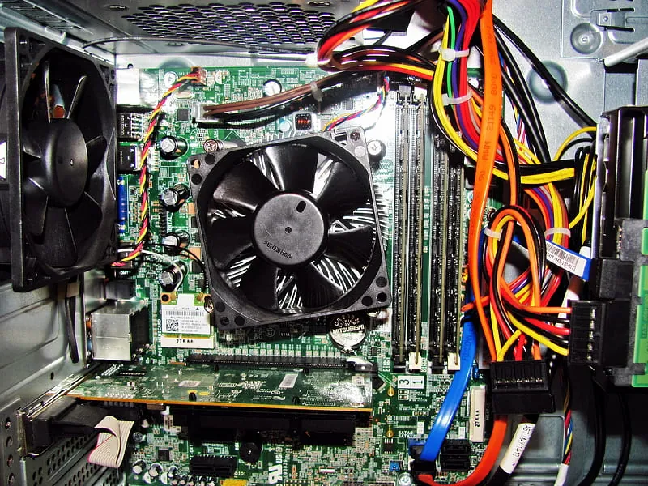

Free computer disposal with secure data destruction
Manage your organisation's obsolete IT assets with our free nationwide computer disposal and recycling service. Whatever the size of your company, we securely collect all types of computers for disposal or recycling.
BOOK A COLLECTIONFree collections when you recycle at least 10 laptops, PCs & servers (any combination). It's also free to recycle almost all waste IT with us.
Secure & Sustainable Computer Disposal
► KEY TAKEAWAYS
All computers have to be recycled by law in line with regulations
Unwanted desktop computers can contain valuable components and sensitive business data. At Saving Tech, we securely collect and process desktop PCs, tower computers, workstations and all-in-one systems, helping businesses dispose of their equipment responsibly.
Whether you have a small number of computers or a large-scale clearance, we manage the process from collection and secure data destruction through to reuse and responsible recycling.
Secure Data Destruction
We follow documented data-erasure procedures aligned with NIST SP 800-88 Rev. 1 and UK Government HMG Information Security standards, helping ensure data is securely removed before equipment is reused or recycled.
Data-erasure certificates and device-level reports are available for your records.
Environment friendly
Under UK WEEE regulations, businesses are required to process retired desktop computers through certified e-waste channels. At Saving Tech, we turn that compliance obligation into zero-landfill impact by recycling every single component of your PC setup.

Ready to book?
Frequently asked questions
Is desktop PC disposal free for our business?
Yes. Collections are completely free when you recycle 10 or more major units (desktops, laptops, or servers in any combination).
How do you wipe data from our desktop drives?
We purge every 3.5" SATA drive, 2.5" SSD, and NVMe stick using NIST SP 800-88 Rev. 1 and HMG IS5 sanitisation protocols. Non-responsive or physically damaged drives undergo total physical destruction.
What proof do we receive for GDPR and audit compliance?
Every computer is assessed for reuse before any recycling decision is made. Working devices are refurbished and returned to use, and only equipment that can't be reused is broken down for materials recovery.
Can I get proof that my computers have been recycled?
You receive a Waste Transfer Note for WEEE compliance alongside digitally signed, itemised Certificate of Destruction logging every drive by serial number for your GDPR and ISO 27001 audit trail.
Which desktop form factors do you accept?
We collect all desktop hardware—full towers, Small Form Factor (SFF) workstations, micro PCs, Intel NUCs, All-in-One (AIO) units, and Apple iMacs, regardless of age or working condition.
Can we include monitors and desk cabling in the collection?
Yes. You don't need to separate your setup—we collect complete desk environments, including dual monitors, power leads, docking stations, keyboards, and mice alongside the PC towers.
What if a PC won't turn on or has a dead power supply?
A non-booting PC still holds intact data. We extract the internal storage drives directly from the chassis and sanitize them using standalone hardware wiping bays or physically destroy them if unreadable.